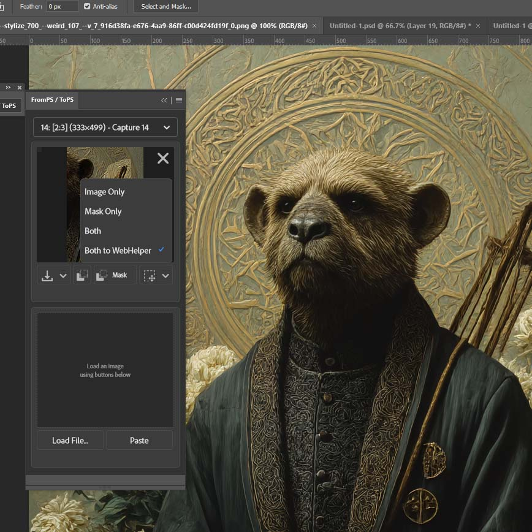
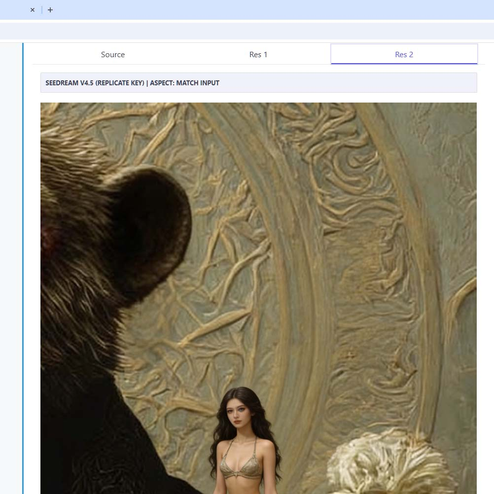
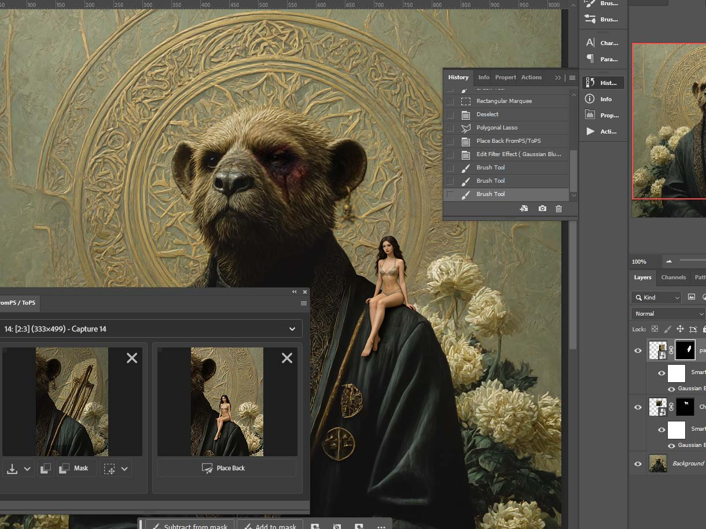

PATH B — WEBHELPER API WORKFLOW
Direct API Generation
Use your own API keys for Grok, FLUX, Seedream & more. Bypass content filters.
1
📤 Send to WebHelper
Select new area, choose "Both to WebHelper". Image + mask auto-sent.

New selection · 2:3 · "Both to WebHelper"
2
⚡ Choose Model & Generate
Select provider (Seedream, Grok, FLUX…), write prompt, Generate. Browse results as tabs.

Seedream v4.5 · Mask overlay

Res 2 — Generated result
3
✅ Final Composite
Copy → Paste → Place Back. Both AI layers blend. Full non-destructive structure.

Final · Two AI layers · Non-destructive · Horizontal layout